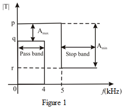

The selectivity is,

Thus, the selectivity is, .
Consider the transmission characteristics of a low-pass filter shown in Figure 1.

In Figure 1, the magnitude in linear scale but the attenuation constants are in decibels (dB).
The range of pass band is ,
The range of stop band is .
The transmission variation in the pass band is at most 10%.
The transmission variation in the stop band is should not exceed 0.1 % of the maximum passband.
The maximum attenuation allowed in the passband is,
Thus, the maximum attenuation allowed in the passband is, .
The minimum required attenuation in the stop band is
Thus, the minimum required attenuation in the stop band is, .
The selectivity is,
Thus, the selectivity is, .